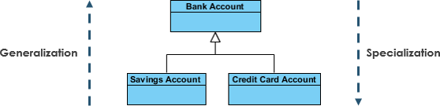

If two classes in a model need to communicate with each other, there must be a link between them, and that can be represented by an association (connector).
Association can be represented by a line between these classes with an arrow indicating the navigation direction. In case an arrow is on both sides, the association is known as bi-directional association.
Aggregation and Composition are subsets of Association, meaning they are specific cases of association. In both aggregation and composition object of one class owns object of another class.
It implies a relationship where the child can exist independent of the parent.
Aggregation link doesn't state in any way that class A owns class B, nor that there is parent and child relationship.
The aggregation link is usually used to stress the point that class A instance is not the exclusive of class B instance, as infact the same class B isntance has another container.
It implies a releationship where the child can not exist indepenedent of the parent.
There is a strong life cycle dependency between the two, meaning that when one object deletion result delting the other object.
Generalization is a mechanism for combining similar classes of objects in to a single, or more generic class.
Generalization identifies commonalities among a set of entities. The commonality may be of attributes, behavior or both.
In onther words, a super class has most general attributes, operations, and relationships that may be shared with subclasses. A subclass may have more specialized attributes and operations.
Specialization is the reverse process of Generalization means creating new subclass from an existing class.
For Example, a Bank Account is of two types - Savings Account and Credit Card Account. Savings Account and Credit Card Account inherit the common/ generalized properties like Account Number, Account Balance, etc. from a Bank Account and also have their specialized properties like unsettled payment etc.
Generalization is the term that we use to denote abstraction of common properties in to a base class in UML.
The UML diagram's Generalization is also known as Inheritance. When we implement Generalization in programming langugage, it often called inheritance instead.
Generalization and Inheritance are the same. The terminology just differes depending on the context where it is being used.